常见的限流算法主要有两种：令牌桶和漏桶算法，也可以使用计数器进行粗暴限流实现。
算法原理
计数器
维护一个请求数量，在一段时间里，如果请求总数超过了limit，那么我们可以把这个请求拒绝掉，也可以将其放入到缓冲队列中，等待下一个时间段再进行操作。
例如在上图中，如果时间1~2中出现了110个请求，那么后面的10个请求就会被拒绝掉，如果这一个时间段中的请求数量在100之内，那么每一个请求都会进行响应。
漏桶算法
计数器算法中容易出现毛刺，比如说在60s中我们允许100个请求，但是前1s的时候我们就接收到了100个请求，那么后面的59s我们不会对任何的请求进行响应。
在漏桶算法中我们将请求依次添加到桶中间，添加的时候如果桶子已经满了，那么我们将这些请求给丢掉或者缓存，另一端以一定速率对请求进行消费。

一般来说，漏桶是一个FIFO的队列，我们消耗的往往都是最先发起的那一个请求。
漏桶算法可以使得输出变得平滑，因为算法中请求以固定速率进行消费，也正因为如此，所以漏桶算法不支持突发的请求。
令牌桶算法
令牌桶算法是漏桶算法的一种改进，我们设置一个令牌漏斗，桶中初始化一定数量的令牌了，然后按照一定的速率往漏斗中添加令牌，每一个请求到来的时候都会往漏桶中获取需要数量的令牌，如果令牌不够，那么拒绝该请求或者缓存。

相较漏桶算法而言，令牌桶算法允许一定程度的突发。
算法实现
限流算法需要实现的基本功能就是判断是否能够放行该请求，如果不行的话，给一个需要的等待的时长，决定是否等待该时长，或者丢弃该请求。
1
2
3
4
5
| type RateLimiter interface {
Take(num int) time.Duration
}
|
下面代码仅为展现实现思路，并未考虑并发问题
计数器算法
维护一个计数器 count，一段时间后清零。
1
2
3
4
5
6
7
8
9
10
11
12
13
14
15
16
17
18
19
20
21
22
23
24
|
type counter struct {
count int
lastTime time.Time
limit int
}
func (c *counter) Take(num int) time.Duration {
now := time.Now()
if now.Sub(c.lastTime) > time.Second {
c.count = 0
}
c.lastTime = now
if c.count+num <= c.limit {
c.count += num
return 0
}
return time.Duration(c.count+num-c.limit) * time.Second
}
|
漏桶算法
漏桶算法保证请求匀速进行消费，我们需要维护漏桶的容量，已经放入的请求数量，上一次进行消耗请求的时间。
当有一个请求到来的时候，首先根据当前的时间和上一次消耗请求的时间，计算这段时间里已经消费了多少的请求，然后添加该请求进去，如果没有超过最大容量，那么允许该请求，如果超过了容量，那么被放弃或者等待。
1
2
3
4
5
6
7
8
9
10
11
12
13
14
15
16
17
18
19
20
21
22
23
24
25
26
27
28
| type bucket struct {
capacity int64
lastTime time.Time
count int64
limit int64
}
func (b *bucket) Take(num int64) time.Duration {
diff := time.Now().Sub(b.lastTime)
count := b.limit * int64(diff)
b.count -= count
if b.count+num < b.capacity {
return 0
}
return time.Duration((b.count + num - b.capacity) / b.limit)
}
|
令牌桶算法
漏桶算法和令牌桶算法实现的时候比较相似，但是漏桶算法每一轮结算的时候计算消费的请求，减少容器里面的请求数量，而令牌桶算法每轮结算的时候计算产生的令牌数，然后添加到容器中。
1
2
3
4
5
6
7
8
9
10
11
12
13
14
15
16
17
18
19
20
21
22
23
24
25
26
27
28
29
30
| type token struct {
capacity int64
lastTime time.Time
count int64
limit int64
}
func (t *token) Take(num int64) time.Duration {
diff := time.Now().Sub(t.lastTime)
count := t.limit * int64(diff)
t.count += count
if t.count > t.capacity {
t.count = t.capacity
}
if num <= t.count {
return 0
}
return time.Duration((num - t.count) / t.limit)
}
|
总结
当系统的 QPS 太高扛不住了，我们可以使用限流算法限制住一部分的流量，比如对于 HTTP 请求可以返回 429 给用户，同时如果说我们只想要用户在一个时间段里面最多请求 n 次，也可以使用限流算法。
在工程运用中，实现限流算法的时候通常会采用无锁操作，这样可以带来更高的效率。
完整代码
1
2
3
4
5
6
7
8
9
10
11
12
13
14
15
16
17
18
19
20
21
22
23
24
25
26
27
28
29
30
31
32
33
34
35
36
37
38
39
40
41
42
43
44
45
46
47
48
49
50
51
52
53
54
55
56
57
58
59
60
61
62
63
64
65
66
67
68
69
70
71
72
73
74
75
76
77
78
79
80
81
82
83
84
85
86
87
88
89
90
91
92
93
94
95
96
97
98
99
100
101
102
103
104
105
106
107
108
109
110
111
112
113
114
115
116
117
118
119
120
121
122
123
124
125
126
127
128
129
130
131
132
133
134
135
136
137
138
139
140
141
142
143
144
145
146
147
148
149
150
151
152
153
154
155
156
| package main
import (
"fmt"
"time"
)
type RateLimiter interface {
Take(num int) time.Duration
}
type counter struct {
count int
lastTime time.Time
limit int
}
func (c *counter) Take(num int) time.Duration {
now := time.Now()
if now.Sub(c.lastTime) > time.Second {
c.count = 0
}
c.lastTime = now
if c.count+num <= c.limit {
c.count += num
return 0
}
return time.Duration(c.count+num-c.limit) * time.Second
}
type bucket struct {
capacity int64
lastTime time.Time
count int64
limit int64
}
func (b *bucket) Take(num int64) time.Duration {
diff := time.Now().Sub(b.lastTime)
count := b.limit * int64(diff)
b.count -= count
if b.count+num < b.capacity {
return 0
}
return time.Duration((b.count + num - b.capacity) / b.limit)
}
type token struct {
capacity int64
lastTime time.Time
count int64
limit int64
}
func (t *token) Take(num int64) time.Duration {
diff := time.Now().Sub(t.lastTime)
count := t.limit * int64(diff)
t.count += count
if t.count > t.capacity {
t.count = t.capacity
}
if num <= t.count {
return 0
}
return time.Duration((num - t.count) / t.limit)
}
func testCounter() {
rt := &counter{
0, time.Now(), 1,
}
for i := 0; i < 10; i++ {
fmt.Println(rt.Take(1))
fmt.Println(rt.Take(1))
time.Sleep(time.Second)
}
rt.limit = 2
for i := 0; i < 10; i++ {
fmt.Println(rt.Take(1))
fmt.Println(rt.Take(1))
time.Sleep(time.Second)
}
}
func testBucket() {
rt := &bucket{
1, time.Now(), 0, 1,
}
for i := 0; i < 10; i++ {
fmt.Println(rt.Take(time.Second.Nanoseconds()))
fmt.Println(rt.Take(100))
}
}
func testToken() {
rt := &token{
10, time.Now(), 0, 1,
}
for i := 0; i < 10; i++ {
fmt.Println(rt.Take(time.Second.Nanoseconds()))
fmt.Println(rt.Take(1))
}
}
func main() {
testCounter()
}
|